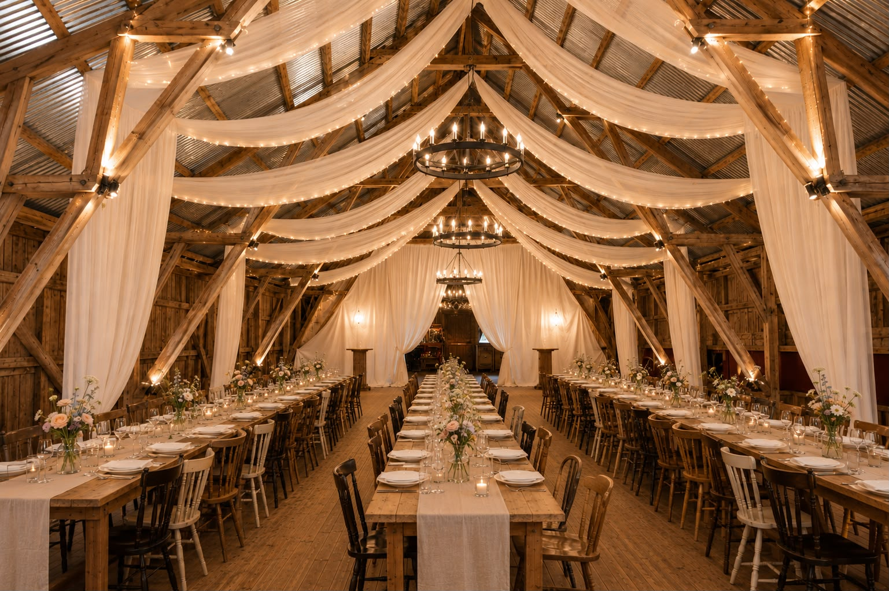
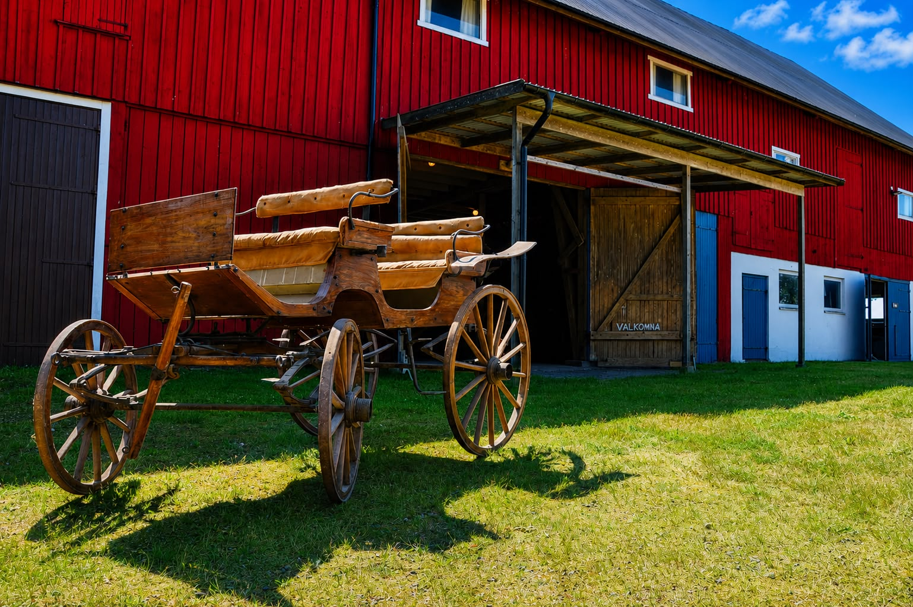

Långås Loge är en gammal loge på den halländska landsbygden, strax utanför Falkenberg. Under samma takbjälkar som en gång valvde sig över tröskad säd dukas idag långbord och dansas det till sent.
Vi har låtit rummet behålla sin själ. Det rustika virket, det höga taket och det varma ljuset gör varje fest till er egen. Resten fyller ni i, precis så som ni vill ha det.
Mitt på den halländska västkusten, ungefär lika nära Göteborg som Helsingborg.
Bokning och förfrågningar sköts via Merulo.
Boka via Merulo